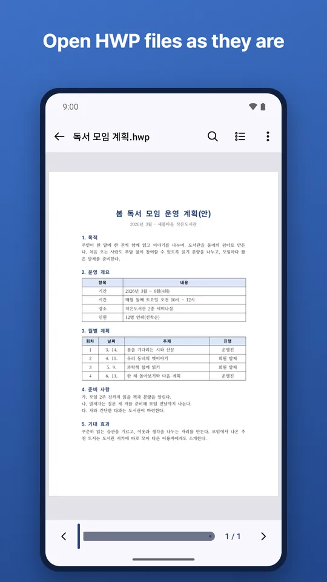

PeriDoc: อ่าน HWP PDF Office
เปิดไฟล์ HWP, PDF, Word, Excel, PowerPoint แบบออฟไลน์ เร็ว เบา และเป็นส่วนตัว
Google Play


PeriDoc คือแอปอ่านเอกสารบน Android ที่รวดเร็ว ฟรี และปลอดภัย เปิดไฟล์ HWP, HWPX, PDF, Word (DOCX), Excel (XLSX) และ PowerPoint (PPTX) ได้ทันทีบนโทรศัพท์หรือแท็บเล็ต ไม่ต้องมีบัญชี และไฟล์ของคุณจะไม่ถูกอัปโหลดไปที่ใดเลย
โปรแกรมอ่าน HWP และ HWPX
ต้องการเปิดไฟล์ HWP จากโรงเรียน บริษัท หรือหน่วยงานราชการในเกาหลีใช่ไหม PeriDoc เปิดเอกสารของโปรแกรมประมวลผลคำ Hangul (HWP, HWPX, HWP 3.0, HML) ที่สร้างด้วย Hancom Office ได้ โดยคงตาราง รูปภาพ และการจัดหน้าไว้ตามต้นฉบับ มีฟอนต์ภาษาเกาหลีในตัว ข้อความจึงแสดงผลได้ถูกต้อง และคุณยังนำเข้าฟอนต์จากคอมพิวเตอร์ของคุณเองเพื่อให้แสดงผลใกล้เคียงต้นฉบับยิ่งขึ้นได้
โปรแกรมอ่าน PDF
อ่านไฟล์ PDF ได้อย่างลื่นไหล พร้อมการค้นหาข้อความ การเลือกและคัดลอกข้อความ สารบัญ ภาพย่อของหน้า และรองรับ PDF ที่ใส่รหัสผ่าน
โปรแกรมดูเอกสาร Office
ดูเอกสาร Word (DOCX) สเปรดชีต Excel (XLSX) และงานนำเสนอ PowerPoint (PPTX) ได้อย่างง่ายดาย โดยไม่ต้องติดตั้งชุดโปรแกรมสำนักงานขนาดใหญ่
ค้นหาข้อความในเอกสาร (รองรับ OCR)
ค้นหาข้อความภายในเอกสารได้ ไม่ใช่แค่ชื่อไฟล์ PeriDoc สร้างดัชนีไฟล์ในเครื่องของคุณไว้ เมื่อค้นหาจึงแสดงทันทีว่าคำที่ตรงกันอยู่ในไฟล์ใดและหน้าใด ข้อความในไฟล์ PDF ที่สแกนและในรูปภาพจะได้รับการจดจำบนอุปกรณ์เท่านั้น (OCR) และรวมอยู่ในผลการค้นหาด้วย
ค้นหาอัจฉริยะ (ไม่บังคับ)
นึกคำที่ต้องการไม่ออกใช่ไหม การค้นหาอัจฉริยะเข้าใจบริบทและความหมาย จึงค้นหาเอกสารที่เกี่ยวข้องและฉากในรูปภาพของคุณได้ ดาวน์โหลดโมเดลเพียงครั้งเดียว (ประมาณ 388 MB) จากนั้นการประมวลผลทั้งหมดจะเกิดขึ้นบนอุปกรณ์ของคุณโดยไม่ต้องใช้อินเทอร์เน็ต
ปรับให้เหมาะกับอุปกรณ์พับได้และแท็บเล็ต
ถือ Galaxy Tab หรือ Galaxy Fold ที่กางออกในแนวนอน เพื่อดูรายการไฟล์และเอกสารคู่กัน ในโหมด Flex (พับครึ่ง) เอกสารจะอยู่ที่ครึ่งบนของหน้าจอ ส่วนปุ่มควบคุมหน้าอยู่ที่ครึ่งล่างให้ใช้งานสะดวก รองรับแป้นพิมพ์ลัด (เช่น Ctrl+F) และการเลื่อนด้วยลูกล้อเมาส์
ไฟล์ประเภทอื่นๆ
ข้อความ (TXT), Markdown (MD), CSV, HTML และรูปภาพ (JPG, PNG, WebP, HEIC, GIF, BMP)
ฟีเจอร์
- ดูทีละหน้าหรือเลื่อนต่อเนื่อง ดูสองหน้าคู่กันในแนวนอน ใช้สองนิ้วซูมเข้าออก
- ค้นหาในเอกสาร เลือกและคัดลอกข้อความ คัดลอกตารางเป็น CSV
- ไปยังหน้าที่ต้องการได้ง่ายด้วยสารบัญและภาพย่อของหน้า และอ่านต่อจากตำแหน่งที่ค้างไว้
- คำค้นหาล่าสุด ดูทุกตำแหน่งที่พบในเอกสารได้ในที่เดียว และค้นหาได้รวดเร็วผ่านทางลัดของไอคอนแอป
- หมุนหน้า บันทึกหน้าเป็นรูปภาพ บันทึกเป็น PDF แชร์ หรือเปิดในแอปอื่น
- ตัวจัดการไฟล์ในตัวที่ค้นหาเอกสารทั้งหมดในเครื่อง พร้อมถังขยะและทางลัดบนหน้าจอหลัก
- ตั้งเป็นแอปเริ่มต้นเพื่อเปิดไฟล์แนบจาก Gmail แอปแชท โฟลเดอร์ดาวน์โหลด และตัวจัดการไฟล์ได้ทันที
- มีฟอนต์ภาษาเกาหลีในตัว และนำเข้าฟอนต์จากคอมพิวเตอร์ของคุณเองได้
ความเป็นส่วนตัวและการใช้งานออฟไลน์
- PeriDoc ไม่อัปโหลดเอกสารของคุณหรือส่งไปที่ใด และส่วนที่ใช้แสดงผลเอกสารไม่สามารถเข้าถึงเครือข่ายได้
- การสร้างดัชนี การจดจำข้อความ (OCR) และการค้นหาอัจฉริยะ ทำงานบนอุปกรณ์ของคุณเท่านั้นโดยไม่ส่งข้อมูลไปที่ใด
- เปิดเอกสารได้แบบออฟไลน์ ไม่ต้องสมัครสมาชิก ไม่ต้องล็อกอิน
- ใช้อินเทอร์เน็ตเฉพาะกับโฆษณาแบนเนอร์ขนาดเล็กที่ด้านล่างของหน้าจอ (Google AdMob) และการดาวน์โหลดโมเดลค้นหาอัจฉริยะ